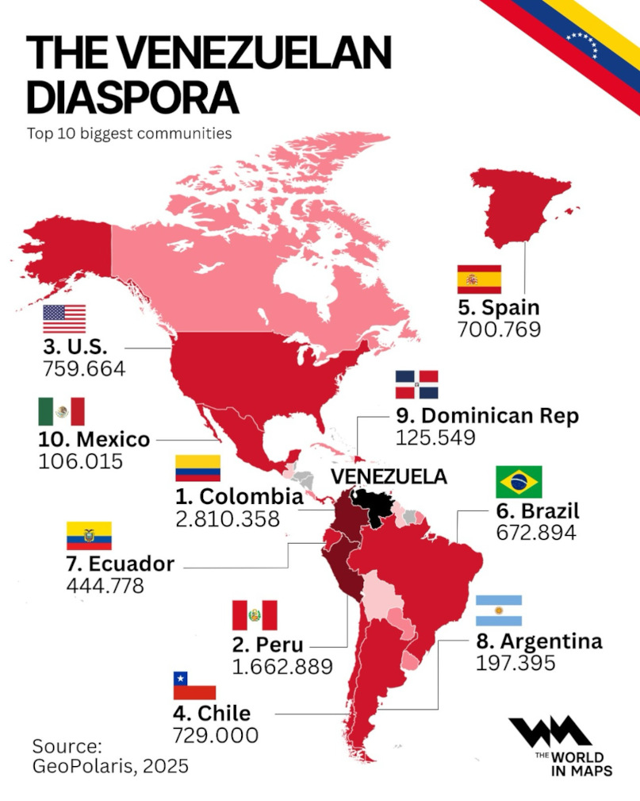
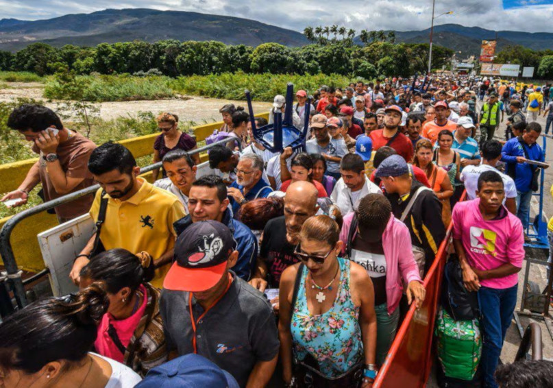
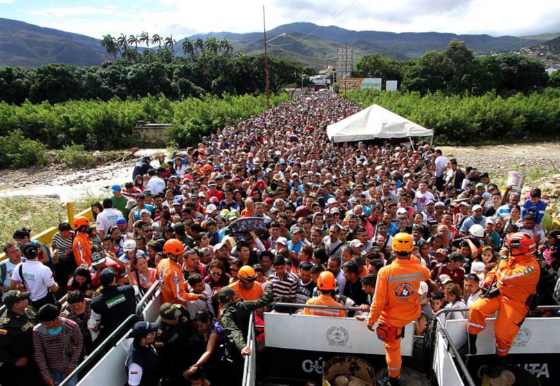
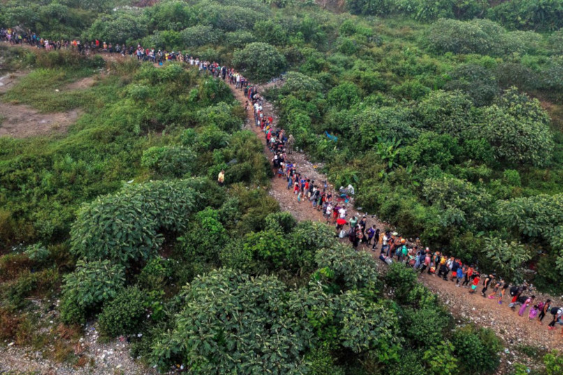

Why I am writing this
I am Venezuelan, and I am part of the diaspora. I did not leave because I wanted a change of scenery or a fun adventure. I left because my life was in danger for opposing the regime. I was not leaving because of money at first. I had a technology consulting business and a solid financial base, so I could have held on for a while.
But the country kept getting harder to live in. Power outages became normal, sometimes for long stretches. Getting fuel could mean lines that lasted for days. And even when the power came back, the internet often did not. My business depended on electricity and connectivity, and both were unreliable. More importantly, the future did not look good. I could survive the present, but I could not build a safe, stable life long term.
What hurts the most is that this did not happen because of a traditional war or a huge natural disaster. It happened in slow motion. The country kept breaking, rules stopped working, and normal things became impossible. That is how millions of people ended up leaving.
What it felt like
People talk about numbers, but for me it is faces. Friends from school living in different countries. Family members scattered. Group chats that never stop because everyone is always trying to help someone with paperwork, housing, or a job lead. You learn to say goodbye a lot, and after a while it feels like everyone is leaving.
When your country is unstable, you stop trusting basic things. You worry about safety, about services, about work, and about what happens if you speak up. Even if you try to stay focused and mind your business, the situation finds a way to affect you.
Human rights and daily life
A big part of the crisis is connected to human rights issues. There are reports about repression, people being detained for political reasons, pressure on the press, and protests being answered with force. On a personal level, that creates fear. It makes people feel like there is no fair system to protect them.
- Fear of speaking freely
- Uncertainty about fair treatment
- Stress around safety and intimidation
- Feeling like institutions do not protect regular people
The Venezuelan diaspora
Venezuela has become one of the largest diasporas of our time without a traditional war or a massive natural cataclysm. That is hard to explain to people who have never lived it. Imagine a whole country where more and more people decide that leaving is the only realistic option.
For many of us, migration was not a single event. It was a long process. First you think about it. Then you delay it. Then something happens and you realize you cannot keep waiting. You pack your life into a few bags and you start over somewhere else.

Starting over
Starting over sounds simple, but it is not. You have to learn new systems, new rules, and sometimes a new language. You miss your people, your food, your holidays, and the feeling of being understood without explaining everything. You work hard, you adapt, and you keep going because you do not want your sacrifice to be wasted.
The diaspora is pain, but it is also resilience. I have met Venezuelans who arrive with nothing and build a life from scratch. They work, study, help their families, and try to do things the right way. That is something I respect a lot.



Video
More information
If you want data and reports, these organizations publish information about human rights and displacement in Venezuela.